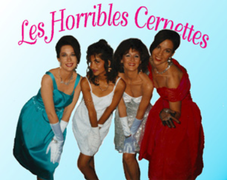

Організація інформації
Кожен з нас хоч раз був сфотографований чи робив фотографію. Сучасні телефони можуть мати навіть декілька лінз для кращого відодраження дійсності на екрані гаджета. Людство пройшло величезний шлях від створення хімікату для фотопаперу в XIV столітті до сьогодні і тепер ми можемо здійснити знімок навіть мікроорганізмів з широкою роздільною здатністю. Але що ж зображено на найпершому вцілілому існуючому фото?
Це вулиця Ле Грас у Франції. Фотографія була зроблена між 1826 і 1827-ми роками. На довгий час воно було втрачене з історії і віднайдене лише в 1952-му році. Можна помітити принципову різницю в різкості, розмитості і деталізації порівняно з сучасними фото. Перше фото на якому зображена людина було зроблене в 1838-му році в Парижі на площі Дю Темпл.
Вже через рік Роберт Корнеліус здійсний перше фото самого себе.
З часом технології розвивались, фото ставали кращими і перше кольорове фото хоч і було значимим, не було вже таким феєричним. Перше фото завантажене в інтернет містило зображення парадої жіночої поп-групи дослідниць Великого Адронного Колайдера
Уявімо, що нам треба скласти програму, яка б робила якісь дії з першими фото. Ми б могли оголосити всі зображення як змінні і задати їм наження назв для роботи.
Великою проблемою стає те, що при збільшенні кількості зображень, нам треба було б додавати багато нових змінних.
Відповідно код б дуже сильно збільшувався і за рахунок нових додавань операцій над новими змінними ставав б менш зрозумілим.
В цьому випадку було б зручно оргазувати всю інформацію в який один набір або колекцію елеметів. Для цього можна використати
такий тип данних як масив.
Масив - це тип структури даних, який зберігає дані у суміжній пам'яті. Дані, що зберігаються, мають той самий тип даних.
Оскільки змінні можуть зберігати одне значення одночасно, масив може зберігати декілька значень одночасно.
Для обробки даних масиву ми повинні зрозуміти, що таке індекс, що таке елемент, як обчислити довжину масиву,
як отримати елемент у масиві, як додати або видалити елемент у масиві, як циклічно масив тощо.
Як працювати з масивами?
Базові поняття:
- Індекс: це число, яке представляє значення масиву, і завжди починається з 0.
- елемент: це значення в масиві.
- len (масив): загальна кількість елементів у масиві.
- append (новий елемент) : це спосіб додати елемент до масиву.
- remove (елемент): метод видалення елемента з масиву.
- clear (): очищує масив.
- sort (): сортує масив.
- count (елемент): рахує кількість входжень елементу в масив.
Щоб присвоїти змінній порожній масив використовують квадратні дужки. Якщо ми хочемо задати початкові елементи в масиві, їх необхідно перечислити всередині цих дужок.
Кожен елемент в масиві має свій порядковий номер(індекс). Нумерація елементів починається від 0. Для того щоб доступитись до елемента, його індекс при звертанні до змінної вказують в квадратних дужках].
За допомогою функції len(масив) можна дізнатись довжину масиву. Якщо ми детальніше поглянемо на масив під назвою array_with_first_images, можна помітити, що не всі елементи в ньому є назвами перших фото. Давайте змінимо його, для відображення дійсності. Скористаймось методами append i len.
Зауваження: Для видалення елемента з масиву його небхідно передати як значення аргумента методу remove.
Зауваження: Ми можемо передати функції print масив параметром. Тоді він увесь буде надрукований.
Від'ємні індекси,зрізи і всяке таке
Трошки задачок:
Більше про перші фото можна почитати тут.